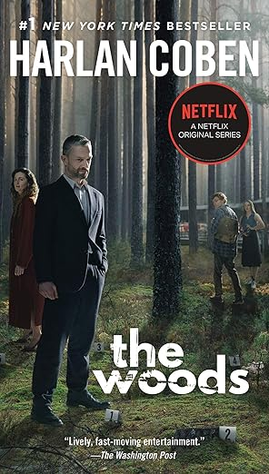
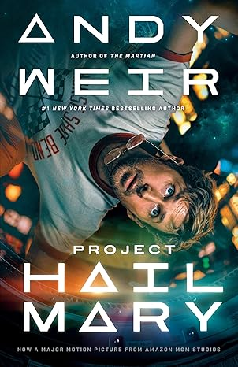

The Apothecary Diaries, Vol. 16 — Natsu Hyuuga
Volume 16 is densely packed — brimming with mysteries, plot developments, and a little bit of everything. Maomao and Jinshi are back to solving a mystery together, Yao and En'en reappear, we get a snippet of Maomao's family dynamics, and the volume culminates in a smallpox outbreak with a significant moral dilemma at its heart. Seeing them work together again reminded me of when we first started this series — and despite their primarily business-oriented interactions, the little snippets of affection feel like a sweet candy given to a child. The haunting idea of Kokuyou as a "mirror" resonated deeply: the thought-provoking notion that we sometimes treat people the way they treat us, especially when we're on defense mode, genuinely made me stop and reflect. The slow-burn romance between Basen and Lishu, though, is quite frustrating — Basen is an idiot, and I really felt for Chue and Maamei. Maomao's complicated feelings toward someone she respected — understanding why he did what he did, yet unable to agree with it, and unable to out him either — left a quiet, lingering weight that I haven't quite been able to shake.

The Apothecary Diaries, Vol. 15 — Natsu Hyuuga
This volume doesn't ease you in — it goes straight into surgical territory, and somehow makes historical medical procedures genuinely gripping. The pacing is almost whiplash: one moment you're laughing at a character interaction, the next your heart is quietly breaking over Ah Duo's arc. What holds it all together is Hyuuga's confidence in shifting tones without warning — and pulling it off every time. The one small complaint: Jinshi and Maomao barely share scenes, which will sting for anyone invested in them. But even with limited page time, the weight of how he loves and values her still comes through. By the last page, my heart was full in the best way — this series keeps finding new ways to earn it.

Wisteria: Wand and Sword (Vol. 6–12)
I came for the anime and stayed for everything else. When the story's weekly pace became unbearable, I turned to the manga — and promptly caught up to the latest volume, which means I'm back to waiting all over again. The premise hooked me immediately: a boy with zero magical ability navigating a world that prizes magic above all else. What sets it apart is that he doesn't sulk about it — he channels his exceptional swordsmanship toward a singular, ambitious goal: reaching Elfaria, a Magia Vander of the highest order. The art is stunning, the world-building is rich, and the story keeps you rooting for him every step of the way.

The Woods — Harlan Coben
The Woods delivers exactly what you'd hope from a thriller — a prosecutor unraveling the mystery of his sister's fate, piecing together clues that pull you deeper with every chapter. Coben builds genuine tension throughout, and the procedural elements feel grounded and compelling. That said, seasoned readers of the genre may find the red herrings a little transparent, and a few character motivations don't quite hold up under scrutiny. These are small cracks, but noticeable ones. None of that, however, prepares you for the ending. It lands like a gut punch — the kind you genuinely don't see coming, and that lingers long after you've closed the book, making you wonder what might have been. Flaws and all, The Woods is a thoroughly satisfying read.

Project Hail Mary — Andy Weir
The movie brought me to the book, but the book made me fall in love. Andy Weir has a gift for making complex science feel accessible and thrilling — and when you pair that with Ray Porter's audiobook narration, it becomes something else entirely. Porter is hands down the best narrator I've encountered; he brings every character and concept to life in a way that makes even the densest scientific moments a pleasure to follow. The book also fills in details the movie couldn't, which made the whole experience richer. A genuine page-turner that works whether you've seen the film or not.